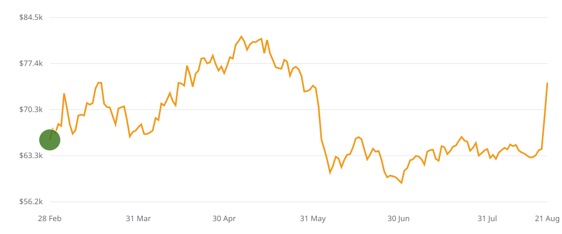
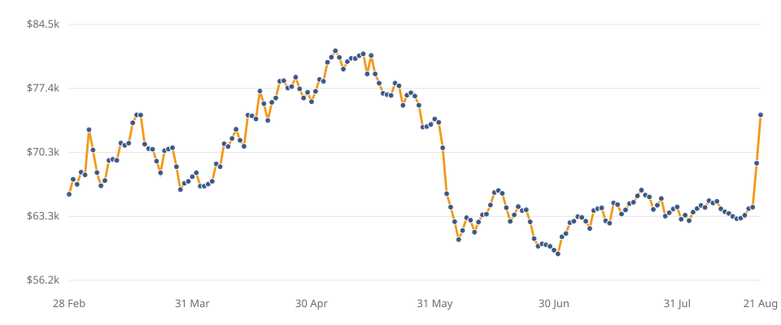
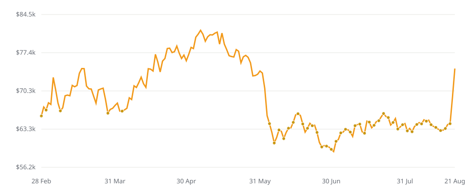
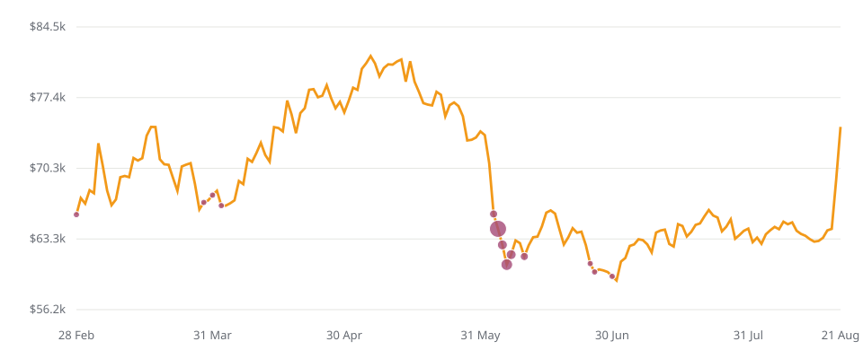

| Strategy | Buy dates | BTC accumulated | Ending value | Gross profit | My notes |
|---|---|---|---|---|---|
| Lump sum | 1 | 0.35009518 | $26,078.54 | +$3,078.54 | You could maximize your investment return if you are lucky to happen to buy at the very bottom |
| Daily DCA | 175 | 0.33577853 | $25,012.09 | +$2,012.09 | Be aware of transaction fees if you buy frequently, as they could eat up your profits significantly |
| DCA adjusted by avoiding high prices (hindsight) | 44 | 0.36127198 | $26,911.10 | +$3,911.10 | By stopping when prices are constantly and relatively high, you could invest more money in low prices to maximize capital efficiency and end up accumulating more Bitcoin |
| DCA adjusted by BitcoinLogbook | 13 | 0.36420298 | $27,129.43 | +$4,129.43 | Follow the basics of DCA, adjust to your own experience and judgement to maximize return and lower risk |
I use DCA as a base. I don’t buy the same amount every day, and I don’t pretend that makes my results proof of a better strategy.
This is my Bitcoin DCA vs lump sum comparison: four ways to deploy the same purchase budget, followed by what happened in a real ledger. I have kept the strategies and the trades separate. Otherwise, it is too easy to compare numbers that mean different things.
1. What am I comparing?
This Bitcoin DCA vs lump sum comparison uses Bitcoin Investment Strategy Public.xlsx. Its Strategies tab contains 175 daily observations, from 28 February through 21 August 2026: 174 elapsed days, counting both endpoints gives 175 buying dates. Each buying strategy spends $23,000. That is a purchase budget, not necessarily the amount at risk from day one.
Three limits before the charts. These four strategies exclude fees, spreads, tax, interest on cash and sells. The workbook’s latest cached valuation input is $66,700.14, with no observation date stored beside it; I use the dated 21 August close of $74,489.85 for the main comparison. The workbook’s daily prices are reproduced as supplied, not independently verified exchange history.
The homepage’s older +$4,629.81 result uses a different valuation: $77,123.13 on 30 October 2026, and the real ledger’s first reference price is $65,015, not the strategy’s $65,696.42 daily close. The older +$4,283.43 lump-sum benchmark therefore is not the lump-sum result in the table above. Same label, different inputs. I won’t mix them.
Using those older homepage inputs, the real-ledger reporting convention reproduces +$4,629.81, versus +$4,283.43 for $23,000 divided by the first ledger reference price and held to 30 October: a $346.38 gap. That narrow historical difference is not proof that daily DCA won, and the embedded-fee caveat below still applies.
For the basics, read what Bitcoin DCA means. This page is about the numbers.
2. Lump sum: all $23,000 on day one.
Put the full $23,000 in on 28 February at the workbook’s daily close of $65,696.42. That buys 0.35009518 BTC. No more purchases. No sells.

At $74,489.85 on 21 August, that Bitcoin is worth $26,078.54. The gross profit is +$3,078.54. This is the easiest strategy to describe, and the one with the most money exposed from the beginning.
If prices rise after the first purchase, having more Bitcoin earlier helps. If they fall, the full position takes the fall. There is no spare purchase budget left to buy cheaper.
3. Daily DCA: about $131.43 a day, every day.
Split $23,000 across all 175 dates. The workbook rounds cumulative spending to cents, so each daily buy is $131.42 or $131.43. It buys more Bitcoin when the price is low and less when the price is high.

The total is 0.33577853 BTC, worth $25,012.09 at the end. Gross profit: +$2,012.09. That is $1,066.45 less than lump sum in this window.
Plain DCA did not beat lump sum here. It kept buying through the higher prices in April and May. The later cheaper buys did not fully offset that. A fixed schedule can help with discipline without producing the highest ending value.
4. Bitcoin DCA: Adjusted to avoid high prices.
The workbook starts with every other day as a possible buying date. It takes the median price across those dates, selects the prices at or below that median, then divides the full budget across 44 selected dates. Purchases are $522.72 or $522.73.

It accumulates 0.36127198 BTC, worth $26,911.10. Gross profit: +$3,911.10. More Bitcoin than either lump sum or daily DCA.
But this is a hindsight example. On 28 February I could not know the median price through 21 August, or how many future dates would pass the filter. Both the cutoff and the spending per buy depend on future observations. This chart illustrates the effect of skipping expensive prices. It is not a backtest of a rule I could have followed live.
A usable forward-looking rule would need its threshold, budget and fallback date defined before trading. That is a different test. I have not substituted one and called it the same workbook strategy.
5. Bitcoin DCA: Adjusted to further maximize return.
That is the aim, not a promise. I spread buys out, kept cash for lower prices, and sold portions along the way. The workbook’s fourth chart only simulates the buys, valued at daily closes. It combines my two purchases on 4 June into one $6,000 date.

The strategy accumulates 0.36420298 BTC. At the end it is worth $27,129.43, for a gross gain of +$4,129.43. My actual ledger instead records 0.36261485 BTC purchased, 0.054 BTC sold, and 0.30861485 BTC remaining.
That difference matters. The real account used platform execution rates, recorded quantities and fees. The strategy uses daily reference closes. A strategy with no sells cannot demonstrate that taking profits improved my return.
6. Test your own dates.
Choose one source and a complete date range inside it. The calculator compares one purchase on the start date with equal daily purchases through the end date. All trades use that source’s daily close. It does not simulate the two adjustable strategies, my sells, fixed order fees or cash interest.
7. Bitcoin DCA vs lump sum FAQ.
Is lump sum better than DCA for Bitcoin?
Neither is always better. In this workbook, a fee-free lump sum accumulated 0.350095 BTC versus 0.335779 BTC with daily DCA. The adjusted strategies accumulated more, but one uses hindsight and neither includes the real sells. Different dates reverse the comparison; this is not a forecast.
What if I had invested $23,000 in Bitcoin all at once?
Using the workbook’s first daily close of $65,696.42 on 28 February 2026, $23,000 bought 0.35009518 BTC. At the workbook’s 21 August close of $74,489.85, that was worth $26,078.54, a gross gain of $3,078.54. Fees, spreads and tax are excluded.
Does DCA reduce Bitcoin risk?
DCA spreads entry prices over time and keeps part of the budget out of Bitcoin until later. It does not stop Bitcoin falling, protect an exchange account, or guarantee a profit. Pausing buys and taking profits add timing decisions. No leverage removes margin-liquidation risk, not the risk of losing capital.
How do fees change the DCA vs lump sum result?
The real ledger records $91.17 in fees, including three estimates. Some fees are already reflected in delivered BTC or sale proceeds, so subtracting them again can double-count costs. A percentage fee and a fixed fee behave differently. Check total execution cost, including spread, before comparing frequent buys with one purchase.
8. Don’t take my word for it. Check the data.
The 18-trade CSV includes date, side, amount, BTC quantity, reference price, fee, platform and an estimate flag. It preserves the ledger cells, not corrected receipt quantities. For example, the 30 June BTC cell says 0.01690000 while its receipt note says 0.01696857. The workbook remains the source for checking these differences.
How to reproduce it.
- Lump sum: divide $23,000 by the first daily close. Multiply the BTC by the final daily close.
- Daily DCA: divide the budget across the dates; divide each day’s spend by its close; add the BTC. The workbook rounds cumulative spending to cents.
- Adjusted strategies: use the daily BTC and cost columns in the strategy CSV. The avoid-highs filter depends on future prices; do not treat it as a live rule.
- Portfolio trajectory: cumulative BTC × current daily close + $23,000 − cumulative purchases. Fees, sells and cash interest are excluded from strategy trajectories.
- Real ledger: remaining BTC × reference price + sale proceeds − gross purchases − recorded fees reproduces the reporting convention. Check whether each fee was already embedded before calling it an economic net return.
The downloadable workbook and CSVs are the source package for this article.
My takeaway: DCA gives me a starting plan. Adjustments introduce decisions, and decisions can be wrong. This window does not prove that I can identify high prices in advance or repeat the result.
Data sources · Last updated 14 November 2026. Supplied workbook: Bitcoin Investment Strategy Public.xlsx, tabs My Own Strategy, Strategies, the four chart tabs and Comparison. The four purchase charts are SVG redraws of the original chart ranges and marker sizes. Workbook daily prices are not independently verified market data, and its undated $66,700.14 cached quote is not presented as today’s price.
2025 calculator and supplementary download data: Binance public daily klines documentation, BTCUSDT, UTC close, 365 observations fetched on 14 November 2026. All calculations are reproducible from the downloads; no independent audit is claimed.